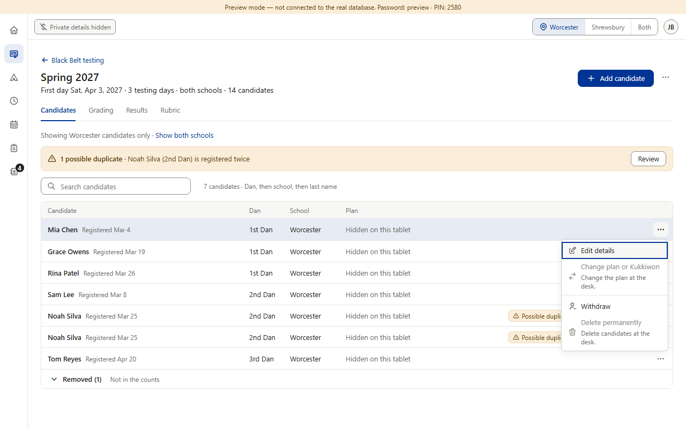
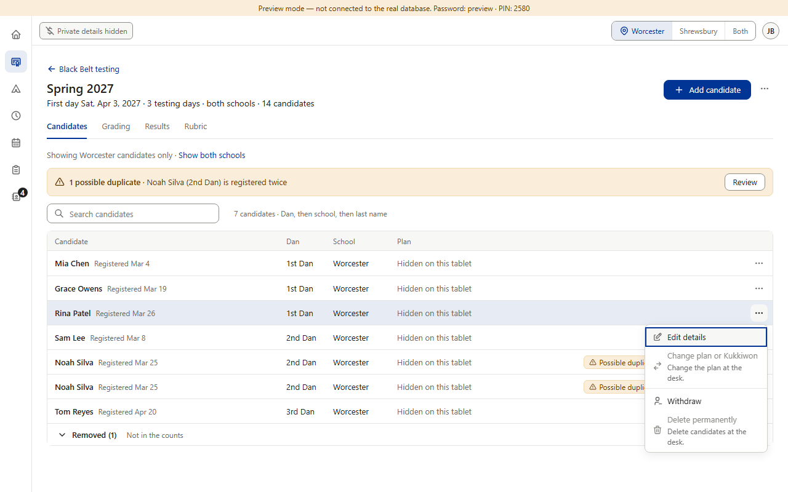
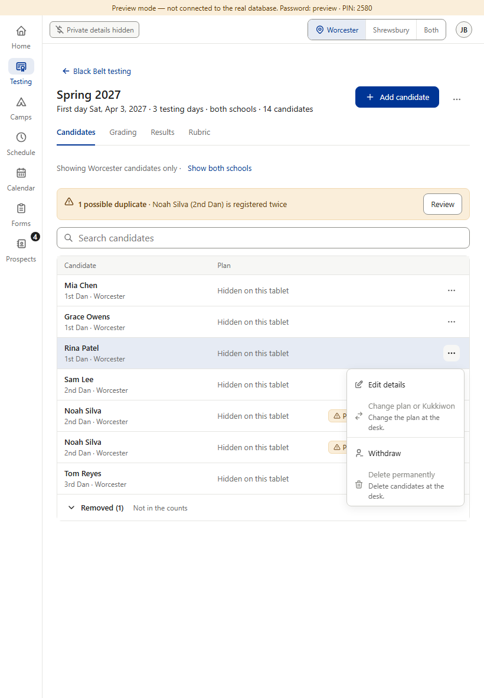
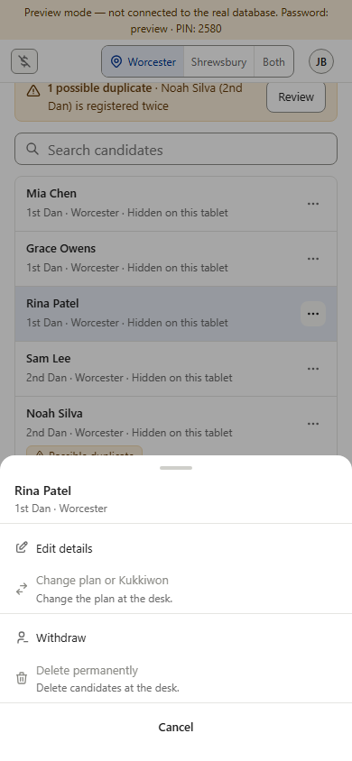
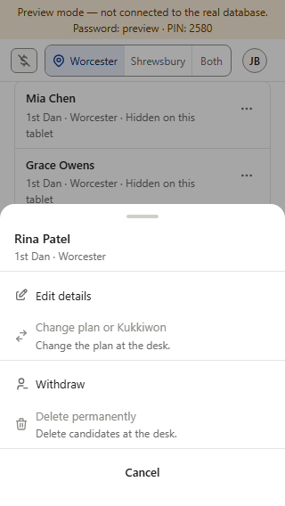

With the switch on, the Plan column reads gray “Hidden on this tablet”, and the row ⋯ grays Change plan or Kukkiwon and (admins) Delete permanently on every row, paid or not. Why: a parent standing beside the mat tablet must not be able to tell who has paid (rulebook v1.036 / v1.037). With the switch off, nothing changes.
Before this change (not pictured — no screenshot without undoing the code): the Plan column showed the plan words (“In full”, “3 payments”…), and Change plan / Delete permanently were grayed only on paid rows — so the ⋯ menu told anyone watching who had paid.




